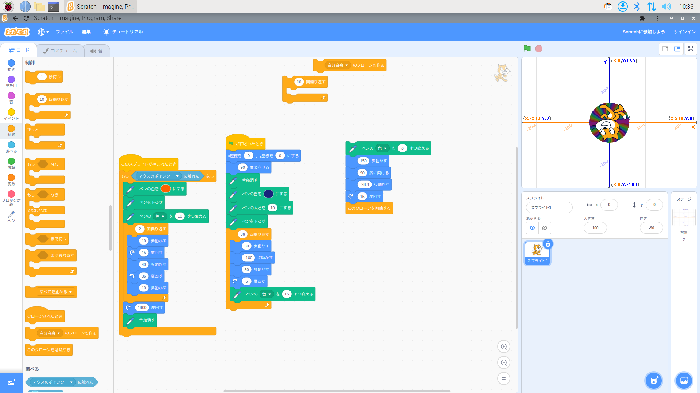
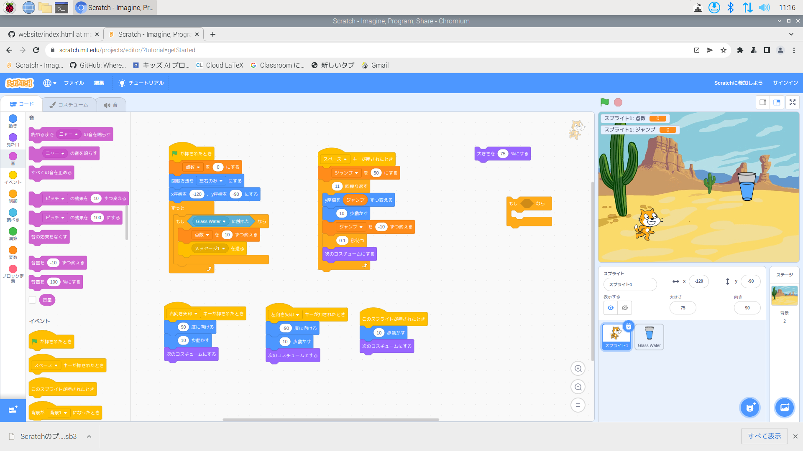

公大高専１年実習I-1レポート
4組15番 The-Saba-fromrain-sea
第1週目＋2週目
1-1 サイエンスアート

1.内容
パソコン（ラズベリーパイ）の基礎準備と、scratchの基礎的な操作を理解し、線を放射状に描くなどしてプログラミングを使った図形や絵の描き方を学ぶ。
2.感想
scratchを使用して初めてプログラミングをできて、初めてだったけどとても分かりやすい仕組みで作業しやすかったです。途中、パソコンがフリーズしてしまったときはすごく焦りました。
ラズベリーパイとか、GitHubとか、知らない単語がいくつか出てきてすこし戸惑いましたが、最後には目標を達成することができました。
ただ、一部しっかり出来ていないところがあったので、次はそうならないように手順をもっと確認して進めようとおもいます。また、タイピングも遅いのでもっと速くしたいです。
自分では円滑に進んでいたつもりだったけど他の人の方がほとんどサクサク進めていたので自分だけけっこう遅いなと先が不安でした。
でも、結果的には多分うまく出来たと思うので良かったです。次回も頑張りたい。あと、あまり関係ないけれど次はもっと感想を書けるように努力したい。
1-2 ゲーム

1.内容
scratchを使用して、簡単なゲームを作成する
2.感想
一回目でscratchの操作はだいぶ慣れていたので前回よりはスムーズに進めることが出来ました。途中、先生が保存しておきましょうと言われた時に偶然フリーズしてしまって
せっかく出来たのやり直しになってしまったのでとても大変でした。完成して、ここからさらにいろいろ工夫すればもっとおもしろくなりそうだなとおもいました。
今回は先生方が用意してくださった資料を見ながら作成したけれど、いつか自分だけでもっと工夫を凝らした物を作ってみたいし、作れるようにもなりたいです。
1-3 ホームページ作成
私のホームページ
1.内容
GitHubを使用し、簡素なホームページやレポート用紙の作成を実際に取り組んで理解する。
2.感想
ホームページ作りは、今回の作業のなかでもかなり苦戦しました。一部の作業を見落としていてずっと自分のサイトになっていなくてなんで？って思いました。
でも、最終的には友達に見落としを指摘されたおかげで完成させることが出来ました。実際にホームページを簡単なものだけど作ってこんなに大変なものをもっとすごく作れる
人たちってすごいなぁと思いました。